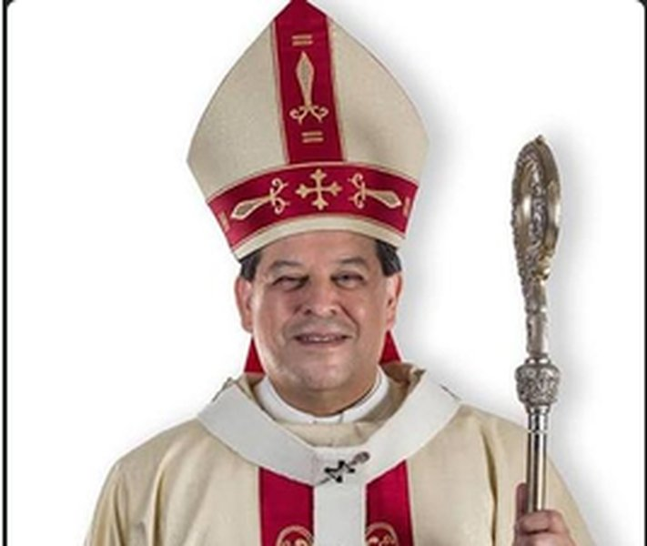
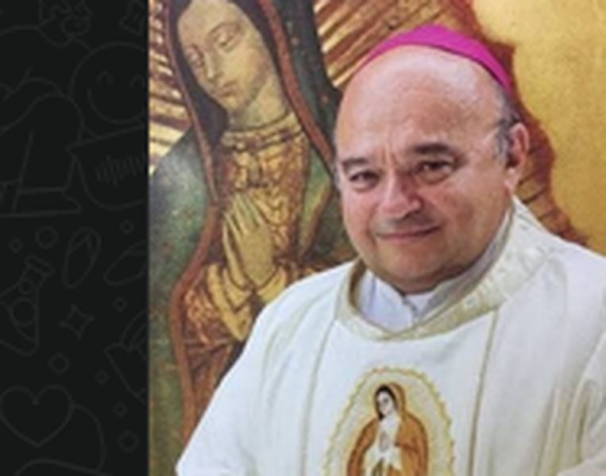
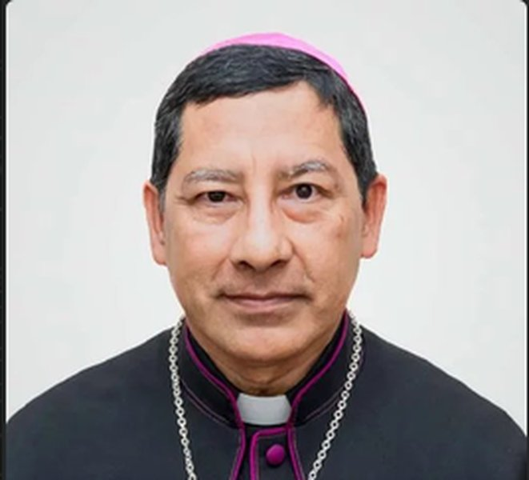
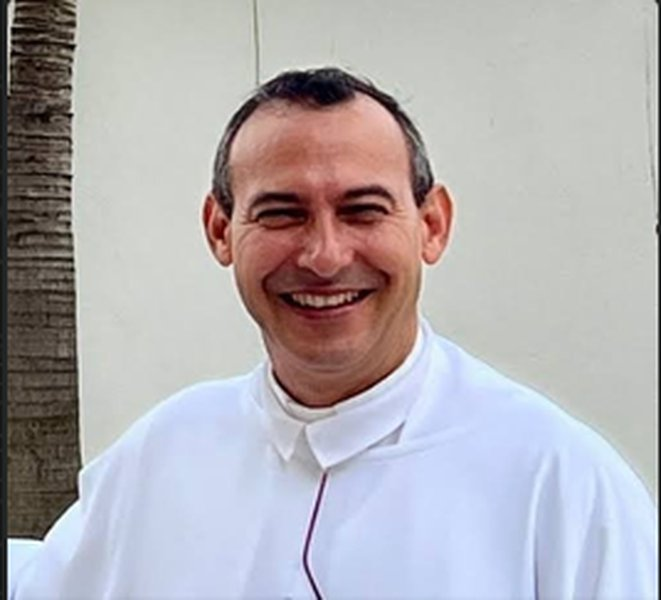
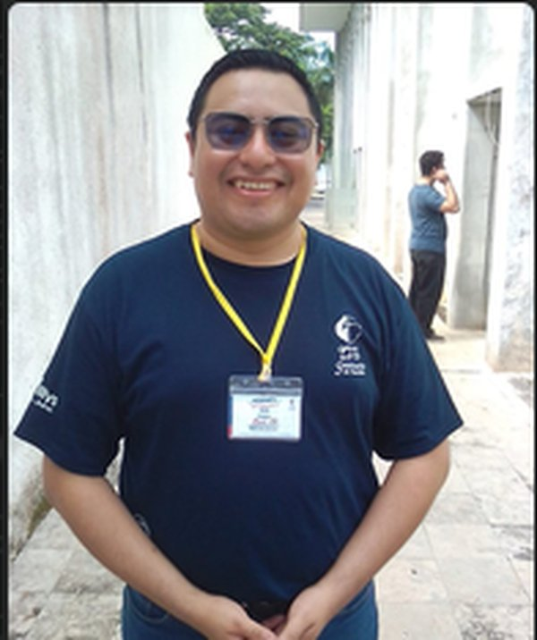
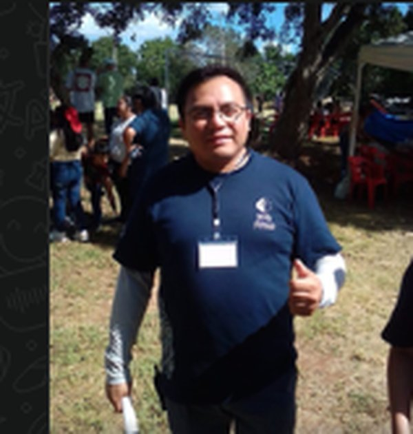
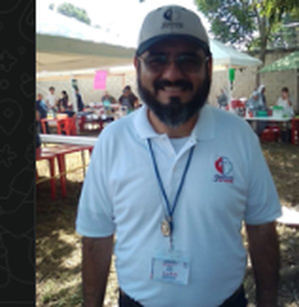
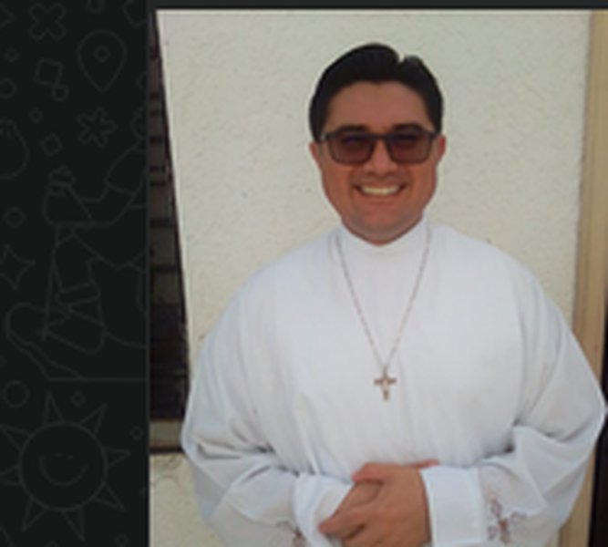
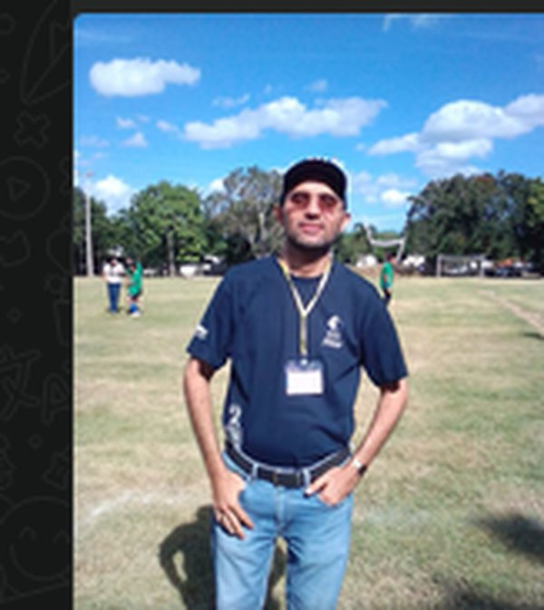

Formamos sacerdotes configurados con Jesucristo Buen Pastor
“No he venido a ser servido, sino a servir y a dar mi vida para la felicidad de muchos”Mc 10, 45
Conoce másUna casa de formación al servicio del Pueblo de Dios
Formamos sacerdotes configurados con Jesucristo, Buen Pastor. Acompañamos a cada joven en un camino integral, gradual y personalizado de discernimiento, para que su vocación madure y se convierta en una entrega generosa al servicio de la Iglesia y del pueblo de Dios.
Somos el Seminario Conciliar de Yucatán, con nuestro Seminario Mayor en Itzimná y nuestro Seminario Menor San Felipe de Jesús, que recorren juntos un itinerario en cinco etapas: Familiar (SEM-FAM), Menor, Catecumenal, Discipular y Configurativa.
Conoce nuestra historia
Más de tres siglos formando pastores para la Iglesia de la península
Nuestra institución está profundamente ligada a la historia religiosa y educativa de la península. A lo largo de nuestra trayectoria hemos permanecido fieles a nuestra misión: formar sacerdotes para la Iglesia. Lo hemos hecho a pesar de las dificultades económicas, los cambios de sede y los conflictos políticos, sostenidos siempre por el esfuerzo constante de mantener viva la formación sacerdotal.
Nuestras raíces
Todo comenzó cuando el sacerdote Gaspar Güemes fundó el Seminario de San Pedro, confiado a los jesuitas, para preparar a quienes deseaban seguir la vida sacerdotal. La pérdida de recursos debilitó aquella primera obra y nos hizo ver que hacía falta una casa más estable.
Nace el Seminario Conciliar de San Ildefonso
El rey Fernando VI autorizó nuestro establecimiento por decreto. El obispo fray Francisco de Buenaventura Martínez de Tejeda impulsó la fundación y redactó nuestros estatutos. Los primeros seis colegiales fueron recibidos en el Colegio de San Pedro; después nos establecimos junto a la Catedral de San Ildefonso, en el centro histórico de Mérida.
Una casa de formación y de cultura
Nos consolidamos como espacio de formación religiosa y de preparación de futuros sacerdotes. Nuestra influencia llegó más allá de lo religioso: por nuestras aulas pasaron figuras como Lorenzo de Zavala y Andrés Quintana Roo. En 1767, la Corona española ordenó la expulsión de los jesuitas.
Años de conflicto y pérdida de nuestra sede
En 1861 el Congreso del Estado ordenó ocupar nuestro edificio para establecer un Colegio Civil. Lo recuperamos temporalmente durante el Segundo Imperio (1863–1867), pero en 1868 lo perdimos de manera definitiva y tuvimos que reorganizar nuestras actividades y buscar otros espacios.
Volvemos a empezar
Aunque habíamos perdido nuestra casa histórica, la formación sacerdotal no se detuvo. En 1876 fuimos restablecidos y comenzamos a funcionar en diferentes locales. Aquellos años fueron decisivos para conservar nuestra continuidad.
La Quinta San Pedro
En 1906 el Seminario Menor ocupaba la Quinta San Pedro y, para 1908, el seminario principal también contaba allí con un nuevo edificio. El 1 de octubre de 1915, durante el gobierno del general Salvador Alvarado, la quinta fue confiscada.
Una sede propia en Itzimná
Ocupamos diferentes locales y atravesamos una interrupción entre 1926 y 1929. En 1938, por fin, volvimos a tener una sede propia en la colonia Itzimná, al norte de Mérida, que nos devolvió la estabilidad tras décadas de dificultades. Hoy seguimos allí, en la calle 18 número 80, colonia Itzimná, Mérida, Yucatán.
El Seminario Menor San Felipe de Jesús
Bajo el arzobispado de monseñor Emilio Carlos Berlie Belaunzarán se impulsó la capilla del Seminario Menor, concebida como espacio para las celebraciones y la vida espiritual. Hoy seguimos ofreciendo formación y acompañamiento vocacional a decenas de jóvenes cada año, como parte de la estructura de formación de la Arquidiócesis de Yucatán.
Misión
Entendemos la formación sacerdotal como un camino de crecimiento, discernimiento y maduración vocacional. Acompañamos a cada joven de manera integral, gradual y personalizada, desde sus primeros acercamientos a la vocación hasta su preparación para configurarse con Jesucristo, Buen Pastor.
Visión
Ser una casa de formación que fortalezca la dimensión humana, espiritual, intelectual y pastoral de quienes se preparan para el sacerdocio, en comunión con la Arquidiócesis de Yucatán y cercana a las familias y comunidades de la península.
Fe
Espiritualidad
Tradición
Compromiso
Más de tres siglos formando pastores para la Iglesia de la península, sosteniendo siempre viva la formación sacerdotal.
Una formación integral para la vida sacerdotal
Creemos que prepararse para el sacerdocio significa crecer en todas las dimensiones de la persona. Por eso, nuestra formación integra cuatro dimensiones fundamentales, que forman parte de un mismo proceso integral, gradual y personalizado.
Humana
Buscamos formar personas maduras, responsables, capaces de relacionarse y vivir en comunidad.
Espiritual
Cultivamos una relación profunda con Dios mediante la oración, la fe y el encuentro con Jesucristo.
Intelectual
Promovemos el estudio y la reflexión para comprender nuestra fe y prepararnos adecuadamente para el ministerio.
Pastoral
Desarrollamos la capacidad de servir, acompañar y acercarnos a las realidades de nuestra Iglesia y sociedad.
Formadores y sacerdotes de la comunidad

Mons. Gustavo
Obispo

Mons. Pedro
Obispo

Mons. Mario
Obispo

Padre Ricardo
Formador

Padre René
Formador

Padre Rafa
Formador

Padre Luis
Formador

Padre Ángel
Formador

Padre Héctor
Formador
¿Te sientes llamado a conocer más?
Acércate a nosotros, visita el Seminario o apoya la misión formativa que llevamos a cabo cada día junto a la comunidad de Yucatán.